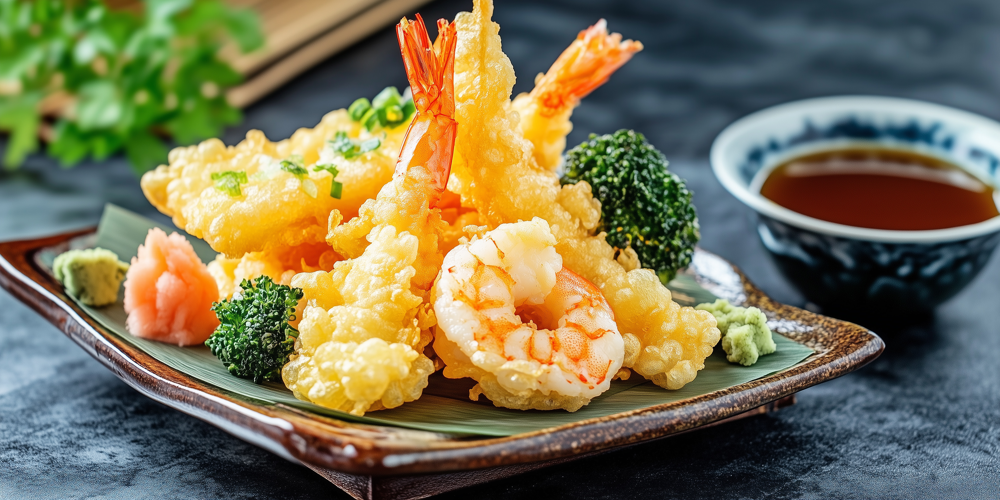
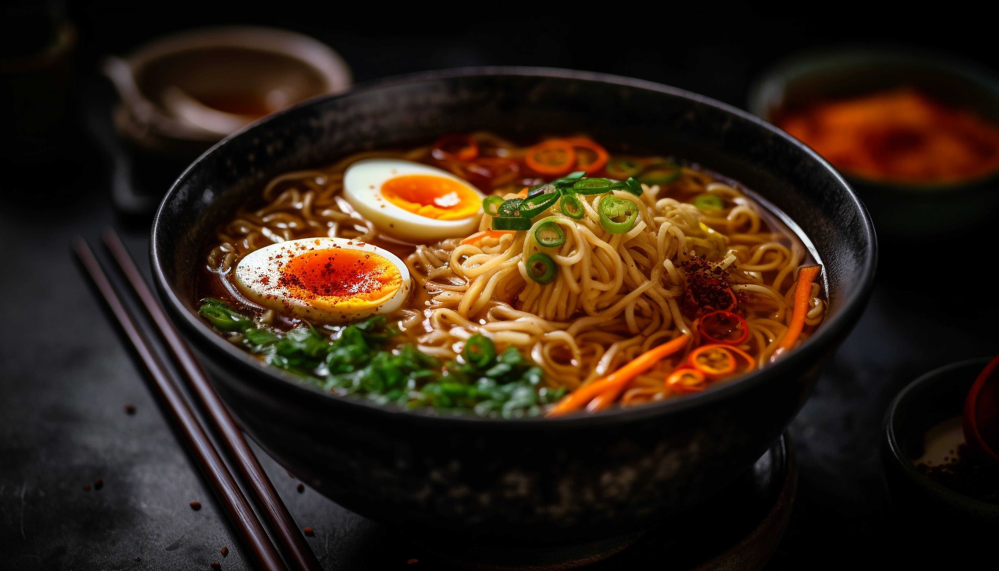
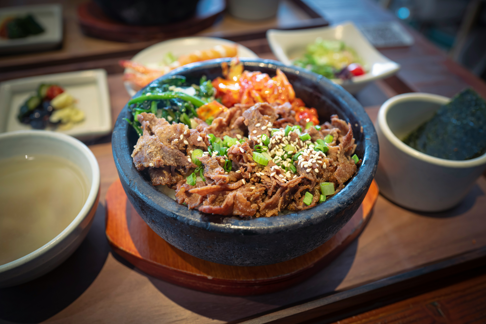
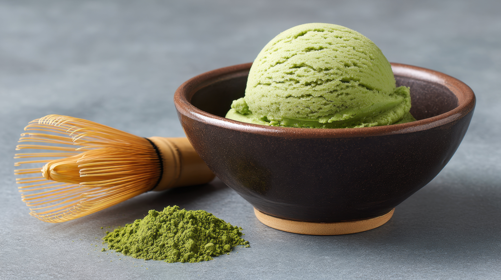
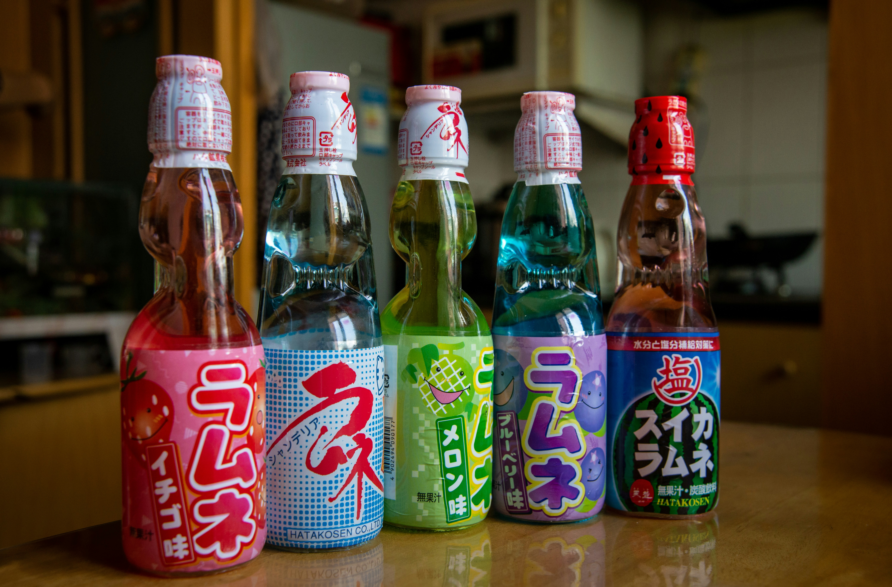

Menu
Appetizers

-
Shrimp Tempura
$9.50
Lightly battered shrimp and seasonal vegetables served crisp and hot.
-
Gyoza
$8.50
Pan-fried dumplings filled with pork, cabbage, garlic, and green onion.
-
Edamame
$6.00
Steamed soybeans finished with sea salt.
-
Chicken Karaage
$9.00
Japanese-style fried chicken with lemon and spicy mayo.
-
Pork Bao Buns
$8.75
Soft steamed buns filled with braised pork belly, pickled vegetables, and sesame.
Ramen

-
Tonkotsu Ramen
$18.00
Rich pork bone broth with chashu pork, soft-boiled egg, bamboo shoots, green onion, and sesame.
-
Shoyu Ramen
$17.50
Soy sauce based broth with chashu pork, corn, bamboo shoots, bean sprouts, and scallions.
-
Shio Ramen
$17.00
Light sea-salt broth with chashu pork, bamboo shoots, green onions, and sesame seeds.
-
Black Garlic Ramen
$18.50
Savory garlic broth with black garlic oil, grilled pork, bean sprouts, corn, and scallions.
-
Vegetarian Miso Ramen
$16.50
Miso-based vegetable broth with tofu, mushrooms, corn, bean sprouts, and green onion.
Rice Bowls

-
Chicken Teriyaki Bowl
$14.50
Grilled chicken glazed with teriyaki sauce served over steamed rice with vegetables.
-
Pork Belly Donburi
$15.00
Slow-braised pork belly served over rice with pickled vegetables and sesame.
-
Katsu Curry Rice
$16.00
Crispy breaded pork cutlet served with Japanese curry and steamed rice.
-
Spicy Beef Bowl
$14.75
Grilled beef tossed in spicy sauce with cabbage, carrots, and sesame seeds.
-
Vegetable Rice Bowl
$13.50
Steamed rice topped with sautéed seasonal vegetables and soy glaze.
Desserts

-
Matcha Ice Cream
$8.00
matcha powder, heavy cream, and a sweetener (like sugar or sweetened condensed milk) for a rich, earthy flavor.
-
Taiyaki
$7.50
Warm fish-shaped cake filled with red bean paste or custard.
-
Sakuramochi
$8.50
Sweet rice cake filled with red bean paste inside and wrapped in a cherry blossom leaf.
-
Dango
$6.50
Chewy rice flour dumplings served with sweet soy glaze.
-
Anmitsu
$9.00
Traditional Japanese dessert with agar jelly cubes, fruits, red beans, and sweet syrup.
Drinks

-
Matcha Tea
$4.50
Traditional Japanese green tea made from finely ground matcha powder.
-
Jasmine Tea
$3.50
Fragrant jasmine tea served hot.
-
Ramune Soda
$4.00
Classic Japanese marble soda in assorted flavors.
-
Yuzu Lemonade
$5.00
Refreshing citrus drink made with Japanese yuzu fruit.
-
Iced Green Tea
$3.00
Chilled green tea served over ice.